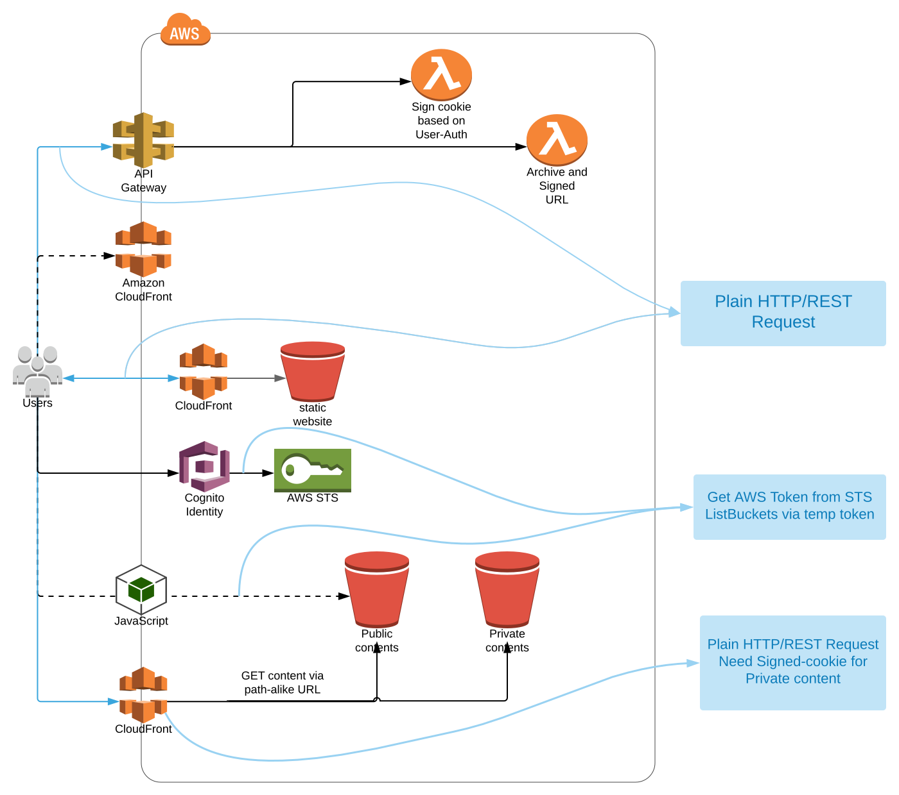

AWS development works in geodetic area
Jeffery Liang, 2017-2018
Location Information group, LINZ
Enterprise central DB
Bulk data extraction toolkits
LINZ data Service
Landonline system
Sub-systems (such as Geodetic system)
OpenSource Project of Geoscience Australia
Production deployment of sitelog Manager
VPC, Network, Asg/ELB, CodeDeploy Setup
Lambda, SNS, S3, CloudFront, Cognito, Role-Policy Setup
# Terraform is awesome!!
Especially `Terraform state / plan` command
"Terraform state surgery" to the Cloud env management
is similar to
"Git interactive rebashing" to Git repository manipulation
#My life-saver in a lot 'broken' context# CloudwatchLogs is sooo hard to understand...
# My survival kit
awslogs get [cloudwatchlogs] -S -G --start [start_time] --end [end_time] \
| egrep --color 'ERROR|WARNING|RequestId' \
| pv --quiet --line-mode --rate-limit 1What does it mean to our customer?
One of the possiblitiesQ: Run out of disk space
Sol: Upload into Amazon
Anyting else?
The authoritative GNSS data management system for storing searching sharing
Backend: S3 file index, S3 files' tagging/meta-attributes
Frontend: API Gateway, Cloudfront with Custom Policy, A static website
GNS Science - PositioNZ station data (per contract)
Pull data and monitor/verify their quality.
Volunteerily provided by private/public vendors UNAVCO
Pull data and try improving data quality.
FTP=>S3; S3=>S3
Parse header or query sitelog
Compression or decimation of RINEX files
1. Build custom Lambda container image;
2. Automatically handle "system library/dependency packaging" ;
3. Partially update lambda deployment package; (probably this improvement should happen to CodeDeploy)
==> PLEASE, Because I just need to update user-level source code? Not those dependent packages JARS or LIBS
FAN-OUT: use SNS ; So SQS Queue, Kinesis, Lambda could all get triggered by the same message/event
Decouple and FAN-IN: use SQS (for decoupling domain-level lambda and utility-level lambda)
FAN-IN: use utility-level lambda Lamda invocations
>> Lambda's Throttling/Concurrency
>> Lambda's termination
>> Lamda failures (Timeout, Deadletter failure, DB credit Drain out )
>> On-demand services(in terms of billing): Lambda, RDS, DynamoDB/ Aurora Serverless
>> Lambda retry (explicitly invoke, or invoked by other services)
The combination "S3 + SNS Notification" can be very useful to realize:
real-time event triggering
manual lambda triggering;
or the DRY_RUN of some process; (where nothing actually happens to S3, but)
Interfacing end-user
 Standalone EXE (un)authenticated - On hold
Cognito Identity Provider (STS + IAM Role)
Public content passthrough by Cloudfront
Protected content via Cloudfront
==> custom policy + Lambda + API GW
Separate account but only one for each BU
Stages (Dev/Uat/Prod) under one account
- Separate VPC for each stage/project
- AWS Config; Basic account support (vendor)
- Most resources are separated between projects
Since Nov 2017
- Sitelog Manager
- Experiment of BDE Uploader in AWS
- GNSS data archive
- Geodetic System Migration(Lift-And-Left)
{kind=link}